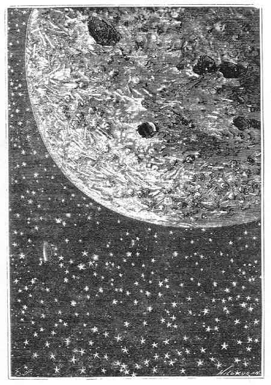

Capítol XII
DETALLS OROGRÀFICS
La direcció seguida
pel projectil, com ja s'ha fet observar, l'arrossegava devers l'hemisferi septentrional
de la Lluna. Els viatgers estaven lluny d'aquell punt central on haurien anat
a parar si llur trajectòria no hagués sofert una desviació
irreparable.
Eren dos quarts d'una de la nit. Barbicane estimà llavors la seva distància
en mil quatre-cents quilòmetres, distància quelcom superior a
la llargada del radi lunar, la qual havia de disminuir a mesura que avancés
devers el Pol Nord. El projectil es trobava aleshores, no pas a l'altura de
l'equador, sinó a través del desè paral·lel, i des
d'aquella latitud, curosament presa en el mapa fins al pol, Barbicane i els
seus dos companyons pogueren observar la Lluna en les millors condicions.
En efecte, servint-se de les ulleres de llarga vista, aquella distància
de mil quatre-cents quilòmetres restava reduïda a catorze, o sigui
tres llegües i mitja. El telescopi de les Muntanyes Roqueres apropava molt
més la Lluna, però l'atmosfera terrestre rebaixava singularment
la seva potència òptica. Per tant, Barbicane, des del seu lloc
en el projectil i amb la seva ullera als ulls, ja albirava certs detalls gairebé
no perceptibles als observadors de la Terra.
-Amics meus - digué llavors el president, amb una veu greu -, no sé
on anem ni tampoc sé si tornarem a veure el globus terrestre. Malgrat
tot, procedim com si aquests treballs haguessin de servir un dia als nostres
semblants. Tinguem l'esperit lliure de tota preocupació. Som astrònoms.
Aquesta bala és un gabinet de l'observatori de Cambridge, transportat
a l'espai. Observem.
Un cop dites aquestes paraules, el treball fou començat amb una precisió
extrema, i ell reproduïa fidelment els diversos aspectes de la Lluna a
les distàncies variables que el projectil va tenir amb referència
de l'astre.
Al mateix temps que la bala es trobava a l'altura del desè paral·lel
Nord, semblava seguir rigorosament el vintè grau de longitud Est.
Ací cal fer una observació important referent al mapa que servia
per a les observacions. En els mapes selenogràfics on, amb motiu de la
inversió dels objectes produïts per les ulleres, el Sud és
a dalt i el Nord a baix, semblaria natural que, a causa d'aquesta inversió,
l'Est hagués d'estar col·locat a l'esquerra i l'Oest a la dreta.
Però no és així. Si es girés el mapa i es presentés
la Lluna tal com ella s'ofereix a les mirades, l'Est fóra a l'esquerra
i l'Oest a la dreta, tot el contrari del que s'esdevé en els mapes terrestres.
Heus ací la raó d'aquesta anomalia. EIs observadors situats a
l'hemisferi boreal, a Europa, si volen, poden albirar la Lluna al Sud amb referència
a ells. Quan l'observen, giren l'esquena al Nord, posició inversa de
la que ocupen quan examinen un mapa terrestre. Pel fet de girar el dors al Nord,
l'Est es troba a llur esquerra i l'Oest a llur dreta. Per als observadors situats
a l'hemisferi austral, a la Patagònia, per exemple, l'Oest de la Lluna
estarà perfectament a llur esquerra i l'Est a llur dreta, perquè
el migdia està darrera d'ells.1
Tal és la raó d'aquesta inversió aparent dels dos punts
cardinals, i que convé tenir en compte per a seguir les observacions
del president Barbicane.
Amb l'ajuda del Mappa Selenographica de Beer i Moedler, els viatgers podien
sense vacil·lar reconèixer la porció del disc enquadrat
en el camp de llur ullera.
-Què veiem en aquest moment? - preguntà Miquel.
-La part septentrional del Mar dels Núvols - respongué Barbicane
-. Estem massa lluny per a reconèixer-ne la natura. Aquestes planúries,
¿estan compostes d'arenes àrides, com així ho pretenen
certs astrònoms? ¿O no són més que boscos immensos
segons el parer de Warren de la Rue, que concedeix a la Lluna una atmosfera
molt baixa però molt densa? Això, ho sabrem més endavant.
No afirmem res mentre no estiguem en dret d'afirmar.
Aquell Mar dels Núvols està delimitat bastant confusament en els
mapes. Hom supsa que aquella immensa planúria està sembrada de
blocs de lava vomitats pels volcans veïns de la seva part dreta, Ptolomeu,
Purbac i Arçaquel. Però el projectil avançant s'hi apropava
sensiblement, i ben aviat aparegueren els cims que enclouen aquell mar en el
seu límit septentrional. Al davant s'aixecava una muntanya resplendent
de tota bellesa, i on el cim semblava perdre's dins una erupció de raigs
solars.
-És...? - preguntà Miquel.
-Copèrnic - respongué Barbicane.
-Vejam Copèrnic.
Aquesta muntanya, situada als 9° de latitud Nord i 20° de longitud Est,
s'aixeca a una altitud
de tres mil quatre-cents trenta-vuit metres per damunt del nivell de la superfície
de la Lluna.2 És perfectament visible de la Terra
estant, i els astrònoms la poden estudiar molt bé, sobretot durant
la fase compresa entre el quart minvant i la lluna nova, perquè aleshores
les ombres es projecten llargament de l'Est a l'Oest i permeten d'amidar-ne
les alçàries.
Aquest Copèrnic forma el sistema radiant més important del disc
després de Tico, situat a l'hemisferi meridional. S'aixeca isolat, com
un far gegantí, en aquella porció del Mar dels Núvols que
confina amb l'Oceà de les Tempestats, i il·lumina amb la seva
esplèndida brillantor dos oceans alhora. Era un espectacle sense parió
el d'aquelles llargues radiacions lluminoses, tan enlluernadores en la lluna
plena i que, sobrepassant des del Nord les cadenes de muntanyes limítrofes,
vénen a estendre's fins al Mar de les Pluges. A la una de la matinada
terrestre, el projectil, com un globus endut per l'espai, dominava aquella superba
muntanya.
Barbicane pogué reconèixer exactament les disposicions principals.
Copèrnic està comprès en la sèrie de muntanyes anulars
de primer ordre, en la divisió dels grans circs.3
El mateix que Kleper i Aristarc, que dominen l'Oceà de les Tempestats,
ell apareix algunes vegades com un punt brillant a través de la llum
cendrosa i fou pres per un volcà en activitat. Però no és
sinó un volcà apagat, així com tots els d'aquesta cara
de la Lluna. La seva circumvallació presentava un diàmetre de
vint-i-dues llegües aproximadament.4 La ullera hi
descobria rastres d'estratificacions produïdes per les successives erupcions,
i els voltants semblaven escampats de restes volcàniques algunes de les
quals es mostraven encara dins el cràter.
-Hi ha - digué Barbicane - diverses categories de circs a la superfície
de la Lluna, i és fàcil de veure que Copèrnic pertany a
l'ordre radiant. Si haguéssim passat més a prop, hauríem
albirat els cons que n'ericen l'interior i que foren en altre temps tantes altres
boques ignívomes. Una curiosa disposició interior i sense excepció
en el disc lunar és que la superfície interior d'aquests circs
és remarcablement més baixa que el planell exterior, tot el contrari
de la forma que presenten els cràters terrestres. D'ací es dedueix,
doncs, que la curvatura general del fons d'aquests circs doni una esfera d'un
diàmetre inferior al de la Lluna.
-I per què aquesta disposició especial?
-No se sap - respongué Barbicane.
-Quina radiació tan esplèndida! - repetia Miquel -. Crec que ha
d'ésser ben difícil de poder veure un espectacle més bell!
-¿Què diràs, doncs, si els atzars del nostre viatge ens
menen cap a l'hemisferi meridional?
-Doncs bé, diré que és més bell encara! - replicà
Miquel Ardan.
En aquell moment el projectil dominava el circ perpendicularment. La circumval·lació
de Copèrnic formava un cercle perfecte, i les seves muralles, molt escarpades,
es destacaven clarament. Àdhuc es distingia un doble recinte anular.
Al seu entorn s'estenia una planúria grisosa, d'aspecte salvatge, sobre
la qual els relleus es destacaven de color groc. Al fons del circ, com reclosos
dins un joier, guspirejaren un instant dos o tres cons eruptius, semblants a
unes gemmes enlluernadores.5 Cap al Nord, les muralles
s'abaixaven per una depressió que probablement donava accés a
l'interior del cràter.

Aquesta planúria només fóra una immensa ossera...
En passar per damunt de la plana que l'envoltava, Barbicane pogué observar
un gran nombre de muntanyes poc importants, entre altres una petita muntanya
anular, anomenada Gay-Lussac, i d'un diàmetre de 23 quilòmetres.
Devers al Sud la planúria es mostrava molt aplanada, sense cap prominència
ni ressalt del sòl. Vers el Nord, al contrari, fins a l'indret on ella
confinava amb l'Oceà de les Tempestats, tot era com una superfície
remoguda per un huracà, com si els turons6 i els
embotiments figuressin en una successió d'onades sobtadament coagulades.
Sobre tot el conjunt i en totes direccions corrien les radiacions lluminoses
que convergien al cim de Copèrnic. Algunes oferien una amplada de trenta
quilòmetres sobre una llargada que no es podia calcular.7
Els viatgers discutien l'origen d'aquells raigs estranys, i, com els observadors
terrestres, tampoc no en podien precisar la natura.
-Però ¿per què - deia Nicholl - no podrien ésser
simplement aquests raigs que els contraforts de les muntanyes que reflectissin
més vivament la llum del Sol?
-No - respongué Barbicane -; si així fos, en certes condicions
de la Lluna, aquestes arestes projectarien ombres, i tanmateix no en projecten
mai.8
Efectivament, aquells raigs només apareixen a l'època en què
l'astre del dia està en oposició amb la Lluna, i desapareixen
així que els seus raigs esdevenen oblics.
-Però què han pensat per a explicar aquestes radiacions lluminoses
-preguntà Miquel -, car jo no puc creure que els savis restin curts a
donar explicacions!
-Sí - respongué Barbicane -, Herschell ha formulat una opinió,
però no la gosava afirmar.
-No ve d'aquí. Quina és aquesta opinió?
-Pensava que aquests raigs devien ésser corrents de laves refredats que
resplendien quan el Sol els tocava normalment. Això pot ésser,
però res no és menys cert. A més, si passem ben a la vora
de Tico, estarem en millors condicions per a reconèixer la causa d'aquestes
radiacions.
-¿Sabeu, amics meus, en què s'assembla aquesta planúria
vista des de l'altura on ens trobem? - digué Miquel.
-No - respongué Nicholl.
-Doncs bé, amb tots aquests trossos de laves allargades com fusos, s'assembla
a un immens joc de bastonets tirats uns damunt dels altres. Només manca
un ganxo per a retirar-los d'un a un.
-Tingues serietat! - digué Barbicane.
-Tinguem serietat - replicà tranquil·lament Miquel -, i en lloc
de bastonets posem-hi ossos. Aquesta planúria només fóra
una immensa ossera damunt la qual reposarien les despulles mortals de mil generacions
extingides. ¿T'agrada més aquesta comparació de gran efecte?
-Tant val l'una com l'altra - replicà Barbicane.
-Diable! Si que ets difícil d'acontentar! - respongué Miquel.
-Amic meu - reprengué el positiu Barbicane -, poc importa de saber a
què s'assembla això, del moment que hom no sap què és
això.
-Ben contestat - exclamà Miquel -. Això m'ensenyarà a pensar
com els savis!
Mentrestant, el projectil, avançava amb una velocitat gairebé
uniforme al llarg del disc lunar. Els viatgers, com. pot pensar-se, no somniaven
de prendre's ni un instant de repòs. A cada minut canviava el paisatge
que fugia sota llurs ulls. Vers dos quarts de dues de la matinada, entreveieren
els cims d'una altra muntanya. Barbicane, consultant el mapa, reconegué
Eratòstenes (61 quilòmetres de diàmetre).
Era una muntanya anular, alta de quatre mil vuit-cents metres, un d'aquests
circs tan nombrosos en el satèl·lit. I, a propòsit d'això,
Barbicane referí als seus amics la singular opinió de Kleper sobre
la formació d'aquests circs. Segons el parer del cèlebre matemàtic,
aquestes cavitats crateriformes havien hagut d'ésser buidades per la
mà dels homes.
-Amb quina intenció? - preguntà Nicholl.
-Amb una intenció ben natural - respongué Barbicane -. Els selenites
haurien emprès aquests immensos treballs i buidat aquests enormes forats
per refugiar-s'hi i protegir-se dels raigs solars quan els toquen durant quinze
dies consecutius.
-No baden els selenites! - digué Miquel.
-Quina idea més singular! - respongué Nicholl -. Però és
probable que Kepler no conegués les vertaderes dimensions d'aquests circs,
car només buidar-los hauria estat un treball de gegants, impracticable
pels selenites!
-¿Per què, si la pesantor a la superfície de la Lluna és
sis vegades menor que a la Terra? - digué Miquel.
-Però si els selenites són sis vegades més petits! - replicà
Nicholl.
-I si no hi ha selenites? - afegí Barbicane. Amb la qual cosa s'acabà
la discussió.
Molt aviat Eratòstenes desaparegué sota l'horitzó sense
que el projectil s'hagués suficientment apropat per permetre una observació
rigorosa. Aquella muntanya separava els Apenins dels Càrpats.
En l'orografia lunar, hom ha distingit algunes cadenes de muntanyes que estan
principalment distribuïdes en l'hemisferi septentrional. Tanmateix, n'hi
ha algunes que ocupen certes porcions de l'hemisferi Sud.
Heus aquí la taula d'aquestes diverses serralades de muntanyes, indicades
de Sud a Nord, amb llurs latituds i llurs altures referint-se als més
alts cims:
metres
Monts Doerfel ....................... 84º Latitud S. 6.100
" Leibnitz ...................... 65º " " 8.200
" Rook .......................... 20º als 30º " " 7.900
" Altaï ........................... 17º als 28º " "
4.000
Monts Serralades .................. 10º als 20º Latitud S. 3.900
" Pirineus ...................... 8º als 18º " " 3.600
" Urals ........................... 5º als 13º " "
840
" Alembert ..................... 4º als 10º " " 5.850
" Haemus ...................... 8º als 21º " N. 1.500
" Càrpats ....................... 15º als 19º " "
2.000
" Apenins ....................... 14º als 27º " " 6.600
" Taurus ......................... 21º als 28º " "
3.000
" Rifeus .......................... 25º als 33º " "
900
" Hercinians ................... 17º als 29º " " 1.200
" Caucas ........................ 32º als 41º " " 5.560
" Alps ............................. 42º als 50º " "
3.600
D'aquestes diverses serralades, la més important és la dels Apenins,
en què el seu desplaçament té més de cent seixanta
llegües (640 quilòmetres), longitud inferior, tanmateix, a la dels
grans moviment orogràfics de la Terra. Els Apenins voregen la costa oriental
del Mar de les Pluges i continuen al Nord pels Càrpats, on el perfil
amida setanta-cinc llegües (300 quilòmetres).
Els viatgers només pogueren entrellucar els cims d'aquests Apenins que
es dibuixen des dels 10° de longitud Oest als 16° de longitud Est, però
la serralada dels Càrpats s'estengué sota llurs mirades des del
divuitè al trentè grau de longitud oriental i en pogueren aixecar
la distribució.
Una hipòtesi els semblà molt justificada. En veure aquella serralada
dels Càrpats afectant d'ací i d'allà formes circulars i
dominades per pics, en deduïren que ella en altres temps havia format part
de circs importants. Aquests anells muntanyosos en part es devien haver romput
pel vast expandiment al qual es deu el Mar de les Pluges. Els Càrpats
eren aleshores, per llur aspecte, el que serien els circs de Purbac, Arçaquel
i Ptolomeu, si un cataclisme tirés a terra llurs parets de l'esquerra
i les transformés en una cadena de muntanyes contínua. Presentaven
una altitud mitjana no més enlairada de dos mil metres, altitud comparable
a la de certs indrets dels Pirineus, tals com el port de Pinedo.9
Llurs vessants meridionals s'abaixen bruscament devers l'immens Mar de les Pluges.
Cap a les dues de la matinada, Barbicane es trobava a l'alçada del vint-i-vuitè
paral·lel lunar, no gaire lluny d'aquella muntanyola de 750 metres alta
i que duu el nom de Piteas (19 quilòmetres de diàmetre). La distància
del projectil a la Lluna no era de més enllà de mil dos-cents
quilòmetres, reduïda a uns tretze quilòmetres mercès
a les ulleres de llarga vista.
El Mare Imbrium es desplegava sota les mirades dels viatgers, com una immensa
depressió on els detalls eren encara poc perceptibles. A prop d'ells,
a l'esquerra, s'aixecava el mont Lambert (27 km de diàmetre), la qual
altitud s'ha estimat en mil dos-cents cinquanta metres, i més enllà
sobre el límit de l'Oceà de les Tempestats, als 23° de latitud
Nord i 29° de longitud Est, brillava la resplendent muntanya d'Euler (30,500
km de diàmetre). Aquesta muntanya, alta de dos mil metres solament damunt
la superfície lunar, havia estat objecte d'un interessant treball de
l'astrònom Schroeter. Aquest savi, cercant reconèixer l'origen
de les muntanyes de la Lluna, s'havia preguntat si el volum del cràter
es mostrava sempre sensiblement igual al volum de les muralles en escarpa que
el formaven. Ara bé, aquesta connexió existia generalment, i Schroeter
en tragué la conseqüència que una sola erupció de
matèries volcàniques havia estat suficient per a formar aquests
talussos, car erupcions successives haurien alterat aquesta relació.
Només que el mont Euler desmentia aquella llei general, i havia necessitat
per a la seva formació diverses erupcions successives, car el volum de
la seva cavitat era el doble del seu recinte.
Totes aquestes hipòtesis estaven permeses als observadors terrestres,
ja que llurs instruments els servien d'una manera incompleta. Però Barbicane
no en tenia prou amb això, i, veient que el seu projectil s'apropava
amb regularitat al disc lunar, no desesperava, en no poder atènyer-lo,
de sorprendre almenys els secrets de la seva formació.
1. Ampliarem millor aquesta explicació afegint que
l'Est i l'Oest als quals es refereix Juli Verne són els punts cardinals
tal com els veu l'observador terrestre. Un observador situat a la Lluna tindrà
el seu Est selenogràfic allí on l'observador terrestre situat
a l'hemisferi Nord veu el seu Oest. (N. del T.)
2. Aquesta dada que ens dóna Juli Verne, la rectifiquem
fixant-la en 4.000 metres, segons revisions fetes i comprovades. Advertim igualment
que totes les altres dades selenogràfiques numèriques aparegudes
o que vagin apareixent en el transcurs d'aquest llibre han estat revisades i
arrodonides i posades d'acord amb les darreres observacions.
Per a donar al lector una idea de les magnituds i longituds dels cràters
i altres formacions lunars de les quals es faci esment, sempre que ens ha estat
possible hem afegit a l'altitud el diàmetre dels cràters o circs,
detall aquest darrer que manca quasi sempre en la novel·la de Verne.
Una bona part d'aquestes dades numèriques han estat extretes del Dictionaire
Sélénographique de l'abat Th. Moreux - Editions Scientifica -
París. (N. del T.)
3. Copèrnic està considerat com la planúria
anular més típica, o sigui aquests circs que van des dels 16 als
100 quilòmetres de diàmetre. Una classificació que comprèn
nou diferents tipus de famílies de circs aplega totes aquestes formacions
lunars crateriformes i que no esmentem ací per no allargar aquesta nota.
Per a més detalls sobre aquesta qüestió, vegi's l'obra Nuestra
amiga la Luna - Edicions Destino, S. L.- Barcelona, pàgina 115 i següents.
(N. del T.)
4. 90 quilòmetres. El seu formidable cinturó
està format per un seguit de terrasses d'un gruix de 16 quilòmetres.
(N. del T.)
5. La muntanya central de Copèrnic està constituïda
per cinc pics enllaçats, tres dels quals atenyen els 800 metres. (N.
del T.)
6. Pítons, diu el text original francès, o
sia un altell o turó de petita altura en un terreny, com un gep, bony,
morro o qualsevol altra desigualtat que sobresurt i que s'adapta amb la impressió
que causa el paisatge a l'entorn de Copèrnic, vist fotogràficament
o amb el telescopi.
En el Pirineu hi ha alguns indrets que porten el nom de piton i que s'ajusten
també amb el sentit donat, com per exemple, el Piton Carré, en
el Vignemale, ressalt terminal d'una grandiosa paret situada entre el canal
de gel de Gaube i la Punta Chaussenque. (N. del T.)
7. Les radiacions o filaments lluminosos de Copèrnic
arriben fins a més de 1.500 quilòmetres de distància. (N.
del T.)
8. De fet, amb prou feines si l'observatori de Mont Wilson
ha pogut mostrar-les com els vessants de talussos de 8 metres. (Nota del Traductor.)
9. Malgrat les nostres recerques, no hem pogut trobar aquest
coll en cap indret dels Pirineus, i, probablement, cal considerar-lo com una
degeneració d'un mot. En aquest cas, ¿es tractaria, tal vegada,
d'una corrupció de Pineta, el nom del port situat als 2.456 metres d'altitud
i que separa la vall del mateix nom i la d'Estaubé? (Nota del Traductor.)